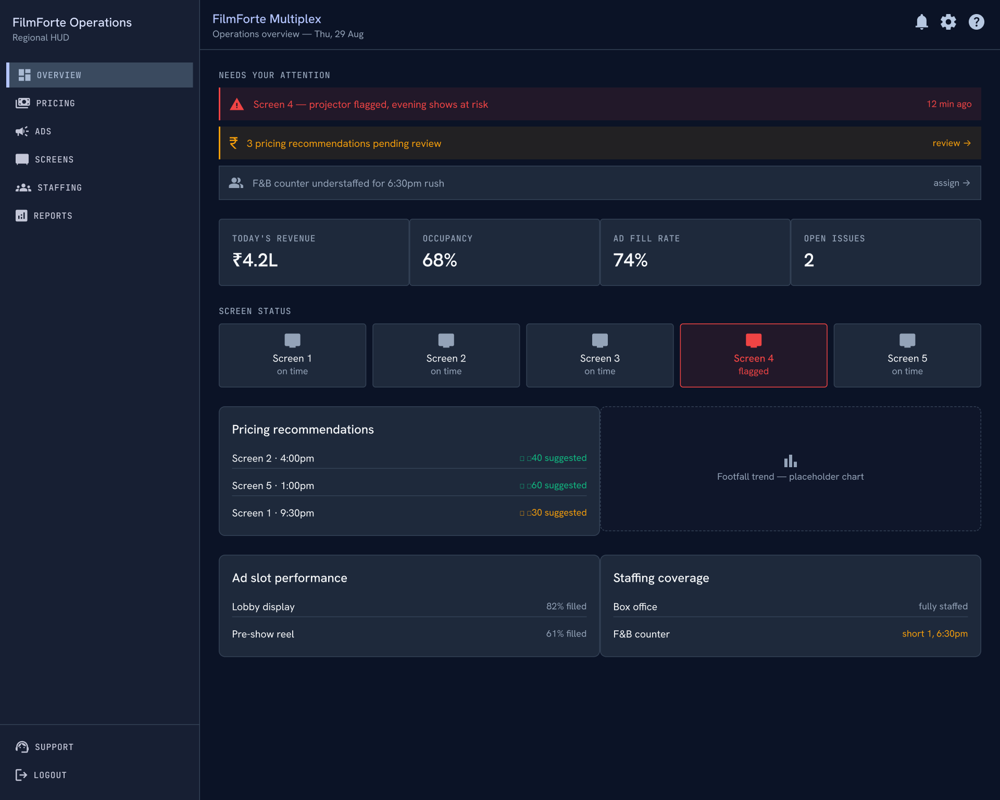
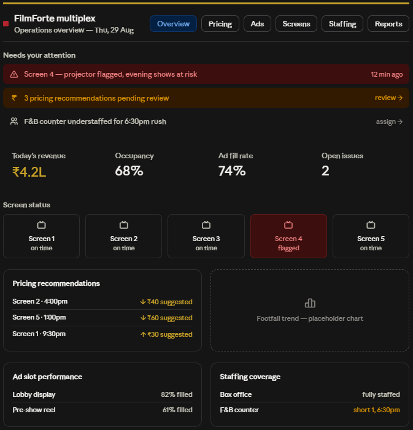
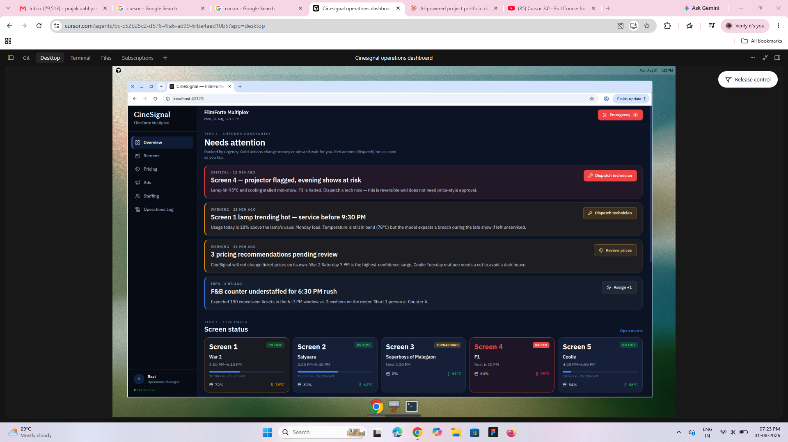
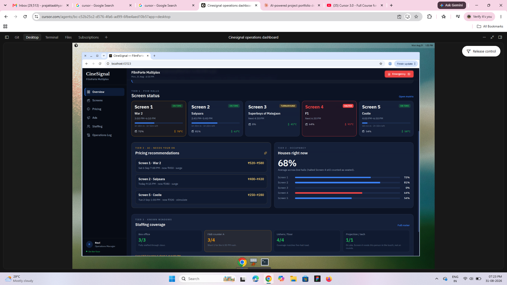
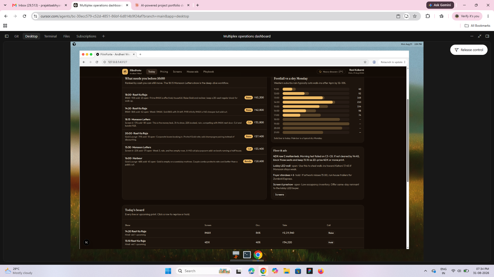
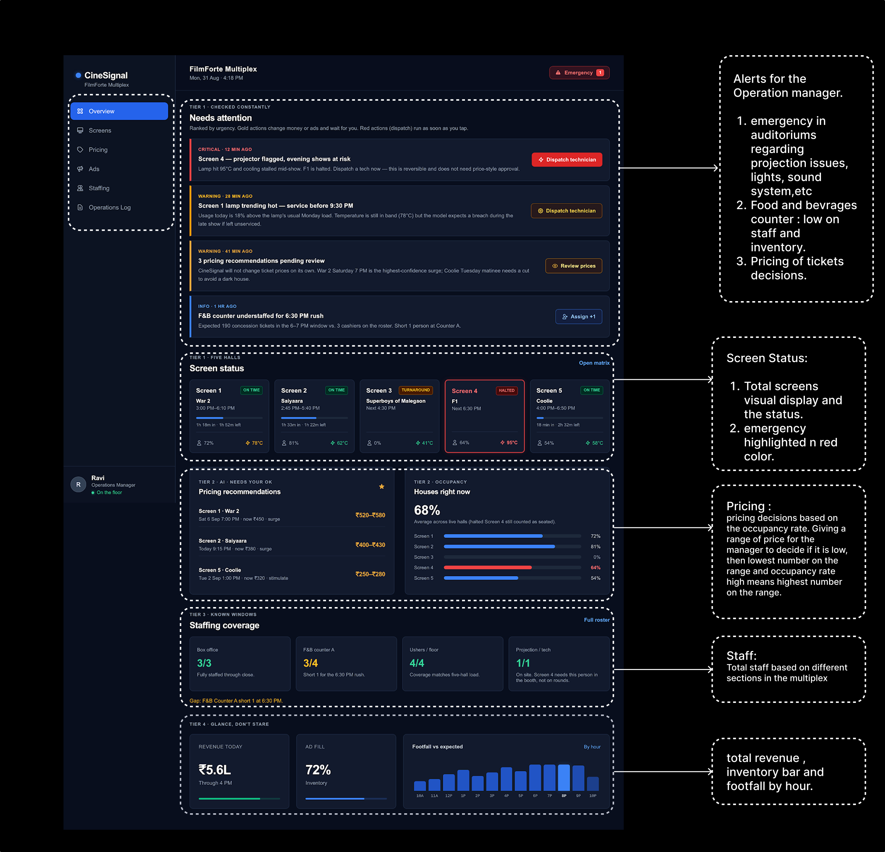
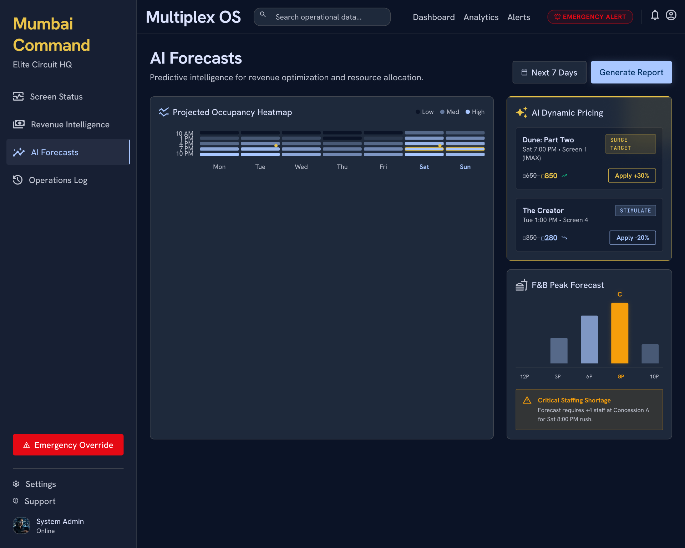
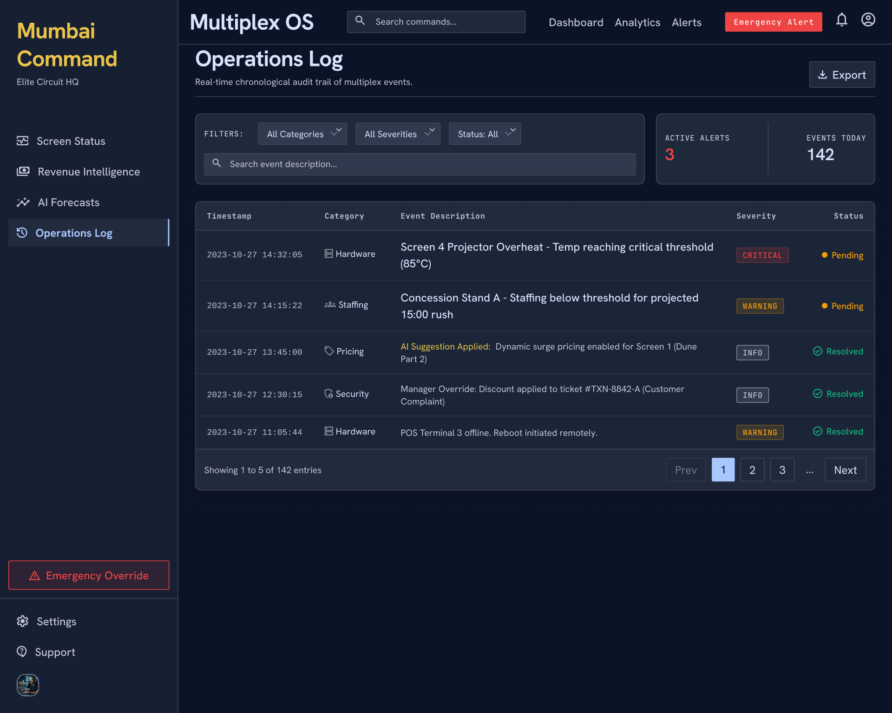

CineSignal.
AI-assisted operations for a multiplex manager.
A single-property command centre that helps Ravi, an on-floor operations manager, notice what matters, decide quickly and keep a clear record of action.
Multiplex operations dashboard
Live screen health, yield, staffing and alert management in one place.
Ravi, Operations Manager
He is mobile, time-constrained and accountable for five screens.
Make the next action obvious
Prioritise urgent, reversible decisions without hiding the larger operational picture.
AI helped me move from research to prototype—while I owned the design decisions.
Research synthesis
Explored the operations manager’s environment, daily pressures and time-critical decisions.
Low-fi wireframe
Translated the research direction into an initial dashboard structure for critique.
First visual
Generated an early dashboard visual from the low-fi direction and product context.
Working prototypes
Built and compared research-informed and non-research-informed dashboard directions.
My role: prompt strategy, evaluation, information hierarchy, interaction guardrails, selection and refinement of the final direction.
Research-led low-fi structure became a first visual hypothesis.


Comparing dashboards showed what research changes.



Urgency needs ranking
Research-informed screens foreground risk and an immediate action.
Alert-to-action time
Measures how quickly a critical signal becomes an intervention.
Resolved-before-impact rate
Measures prevention before a show is disrupted.
Decision adoption
Measures whether managers use pricing or staffing recommendations.
One dashboard, organised around the decisions an operations manager must make.

Needs attention
Emergency alerts, equipment risk, staffing gaps and price recommendations sit at the top because these require immediate action.
Screen status
A five-screen view makes normal, turnaround and halted states scannable at a glance.
Pricing + occupancy
Suggested price movement is paired with house occupancy so Ravi can judge the recommendation before applying it.
Staffing + daily pulse
Coverage, revenue, ad inventory and footfall sit lower in the hierarchy: important context, but not a distraction from urgent work.
How I would measure whether the dashboard improves operations.
Alert-to-action time
Time from critical signal to a logged action, such as dispatching a technician.
Resolved-before-impact rate
Share of issues fixed before a show, customer experience or revenue is affected.
Recommendation adoption
How often managers accept, adjust or reject AI-assisted pricing and yield suggestions.
Forecast accuracy
Difference between predicted and actual occupancy, demand and staffing need.
Yield versus baseline
Compare revenue performance of accepted recommendations against similar untreated showtimes.
Coverage + queue wait time
Check whether predicted rush windows were adequately staffed and queues were reduced.
Weekly active managers
Confirm the dashboard becomes part of the day-to-day operational rhythm.

Useful suggestions, not silent automation.
Projected occupancy, pricing opportunities and staffing risk are shown in the same decision window so managers can act with context.
Human approval for commercial moves
Pricing recommendations make the trade-off visible. Ravi reviews and applies them; the system does not change prices silently.
Actions and decisions remain explainable.
The operations log links a signal to its category, severity, status and outcome—so both the system and the manager’s actions are visible.
Audit trail
Review AI suggestions, staff interventions and resolutions in one chronological record.
Operational learning
Find recurring events and assess what intervention worked over time.

How this concept would be validated in a pilot.
Prevent screen disruption
Signal: rising projector temperature.
Action: dispatch a technician before a show is affected.
alert-to-action time · downtimeOptimise a showtime
Signal: demand trend exceeds target.
Action: review a price or ad-yield recommendation.
acceptance rate · yield vs baselineProtect the F&B rush
Signal: projected queue exceeds staffing coverage.
Action: assign staff ahead of the peak window.
coverage rate · queue wait timeProposed pilot measures: weekly active managers, forecast accuracy, alert-to-action time, resolved-before-impact rate, recommendation adoption and operational yield versus baseline.
AI accelerated the path.
Design judgment set the direction.
CineSignal demonstrates a responsible AI-assisted design workflow: AI helped explore research, wireframes, visuals and working prototypes; the final information hierarchy, product guardrails and validation plan remained deliberate design decisions.
Grounded the experience in the reality of an operations manager.
Used AI to produce and compare directions quickly.
Curated a clear, actionable and measurable product concept.